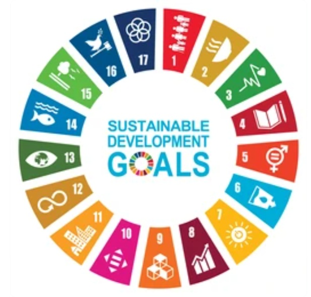

- ¿Cuál es el reto propuesto en esta SdA?
-
El alumnado vive en un entorno que le brinda numerosas posibilidades y actividades. Sin embargo, muchos no son plenamente conscientes de la amplia oferta que ofrece su ciudad. Por ello, resulta fundamental que conozcan sus recursos, al tiempo que aprenden a cuidarla y a desarrollar hábitos sostenibles.
- ¿Qué esperamos que consigan nuestros alumnos al finalizar esta SdA?
-
El alumnado debe ser capaz de dar respuesta a preguntas como:
-What do you know about the city where youlive?
- How can you find out information about the different activities in your community?
- What actions you take are not harmful to the environment?
ODS
- 🏙️ ODS 11: Ciudades y comunidades sostenibles
-
Esta situación de aprendizaje promueve el conocimiento del entorno urbano y la reflexión sobre su uso responsable. El alumnado analiza las posibilidades que ofrece su ciudad y propone mejoras para hacerla más habitable y sostenible. Se fomenta así una ciudadanía activa y comprometida con su entorno.
- ♻️ ODS 12: Producción y consumo responsables
-
A través de las actividades propuestas, el alumnado toma conciencia de la importancia de adoptar hábitos de consumo responsables. Se trabajan acciones como la reducción de residuos, el reciclaje y el uso adecuado de los recursos. Todo ello contribuye a desarrollar actitudes sostenibles en su vida cotidiana.
- 🌱 ODS 13: Acción por el clima
-
La situación de aprendizaje favorece la sensibilización ante los problemas ambientales y el cambio climático. El alumnado reflexiona sobre cómo sus acciones pueden influir en el entorno y propone medidas para reducir el impacto ambiental. Se fomenta así una actitud responsable y comprometida con el cuidado del planeta.
Retos s.XXI
-
- 🌱 Sostenibilidad ambiental
-
Fomenta la conciencia sobre el cuidado del entorno y el uso responsable de los recursos. El alumnado reflexiona sobre cómo sus acciones influyen en la ciudad y propone medidas para hacerla más sostenible.
- 🤝 Ciudadanía activa y global
-
Promueve la participación responsable en la comunidad. El alumnado aprende a valorar su entorno, respetar la diversidad y contribuir a la mejora de la vida en la ciudad.
- 💡 Pensamiento crítico
-
Favorece la capacidad de analizar la realidad urbana, identificar problemas y plantear soluciones. El alumnado desarrolla una actitud reflexiva ante los retos de su entorno cercano.
- 🗣️ Comunicación
-
Se potencia la expresión oral y escrita, especialmente en lengua inglesa. El alumnado comparte ideas, realiza entrevistas y presenta propuestas relacionadas con su ciudad.
- 💻 Competencia digital
-
Se trabaja a través de la búsqueda de información, selección de recursos y creación de productos digitales (como vídeos o presentaciones). Se fomenta un uso responsable y crítico de la tecnología.
